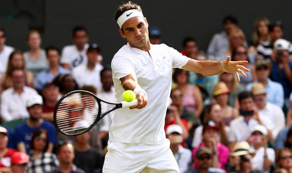

LAWN TENNIS
Tennis is a sport played between two players (singles) or between two teams of two players each (doubles). Each player uses a strung racquet to strike a hollow rubber ball covered with felt over a net into the opponent’s court. The modern game of tennis was born in the United Kingdom in the late 19th century. Then it was called “lawn tennis”. Tennis soon became popular among the upper- class English-speaking population. Then it began to be played around the world. Tennis is an Olympic sport and is played at all levels of society at all ages. The sport can be played by anyone who can hold a racket, including people in wheelchairs. Other than the fact that the tiebreaker was adopted in the 1970s, the rules of tennis have not changed much since the 1890s. A recent addition to professional tennis has been the adoption of “instant replay” technology coupled with a point challenge system. This allows a player to challenge the official call of a point. Tennis is a major spectator sport, especially the four Grand Slam tournaments: the Australian Open, the French Open, Wimbledon and the US Open. These tournaments are considered to be the most Prestigious tennis tournaments in the world. They are held annually. Apart from the Olympic Games, Davis Cup, Fed Cup and Hopman Cup they are the only tournaments regulated by the International Tennis Federation (ITF). These events possess historical significance and also carry huge prize funds. Grand Slam men’s tournaments have best-of-five set matches throughout. At present, the Grand Slam tournaments are the only tour events that have mixed doubles contests. Grand Slam tournaments are held in conjunction with wheelchair tennis tournaments. The exception is Wimbledon, (where the grass surface doesn’t allow this) and junior tennis competitions. Grand Slam tournaments are often seen as the culmination of a particular season, such as the US Open Series. Wimbledon players are required to wear predominantly white. This rule has made certain players like Andre Agassi avoid the tournament. Rod Laver, Bjorn Borg and Pete Sampras are among the greatest tennis players in the history of the sport. Among the contemporaries, Roger Federer is considered to have the potential to surpass the achievements of these illustrious predecessors. Many even feel that Federer could become the greatest player in the history of the game. This is the game which I play. I absolutely love this game. I have seen the tears of Federer, the biting of trophy of Nadal, the tearing of T-shirt by Djokovic and the acrobatics by Gael Monfils. It is really enjoyable to watch this game. I wish I can also play well.